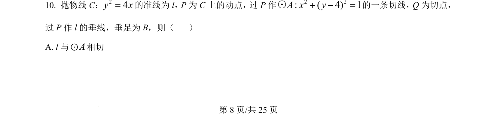
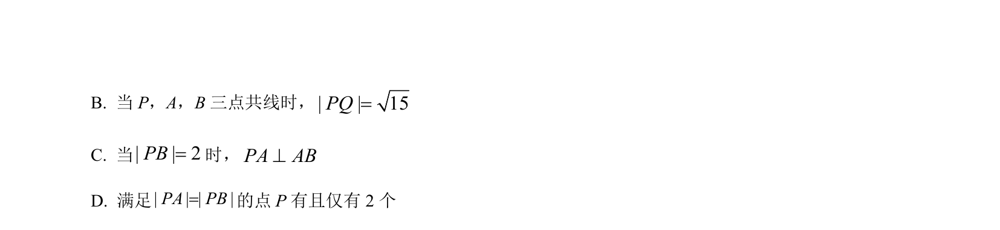
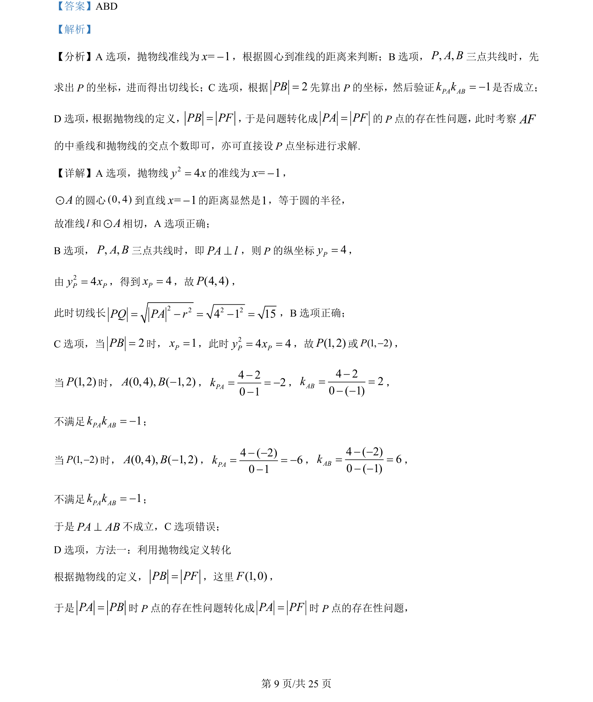
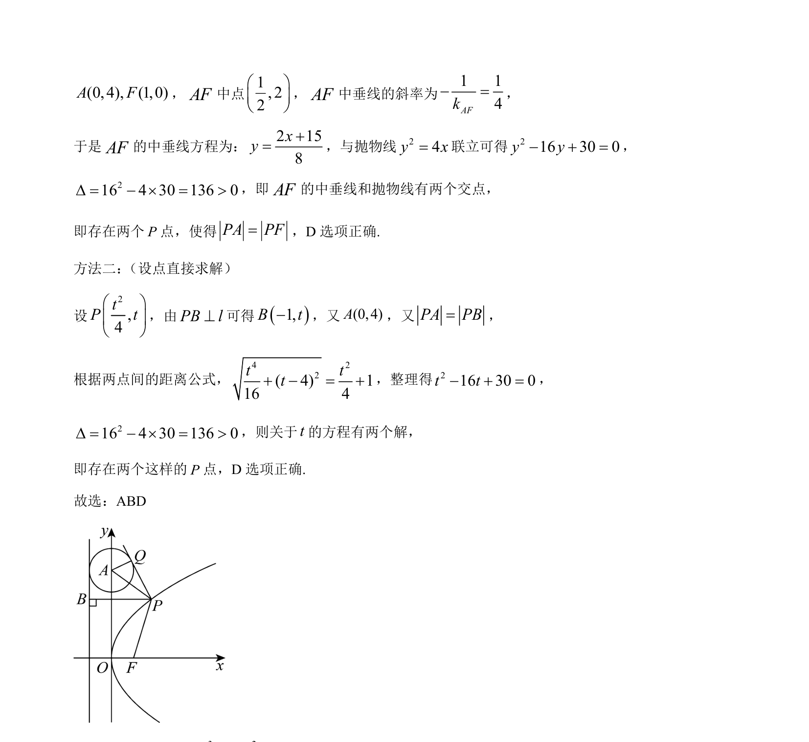

考点：抛物线性质 直线与圆相切 切线长 抛物线定义
抛物线性质
直线与圆相切
切线长
抛物线定义


考查抛物线与圆的综合应用，涉及准线、切线、三点共线及抛物线定义的转化。


📄 原 PDF 第 8 页：素材/真题/吉林/2008-2024·（吉林）数学高考真题/2024年高考数学试卷（新课标Ⅱ卷）（解析卷）.pdf
素材/真题/吉林/2008-2024·（吉林）数学高考真题/2024年高考数学试卷（新课标Ⅱ卷）（解析卷）.pdf